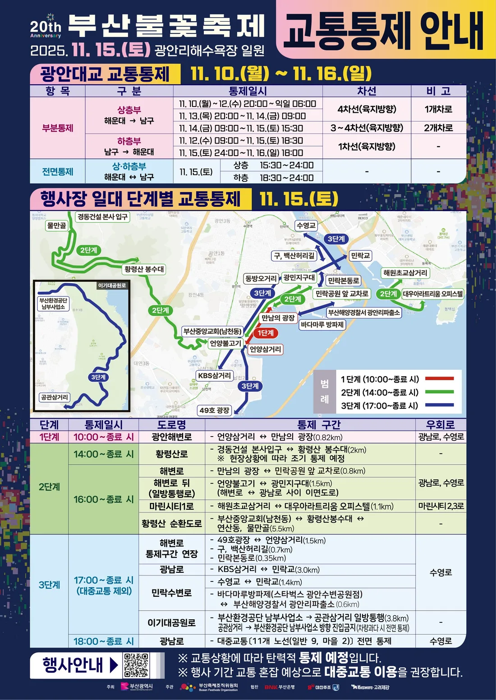
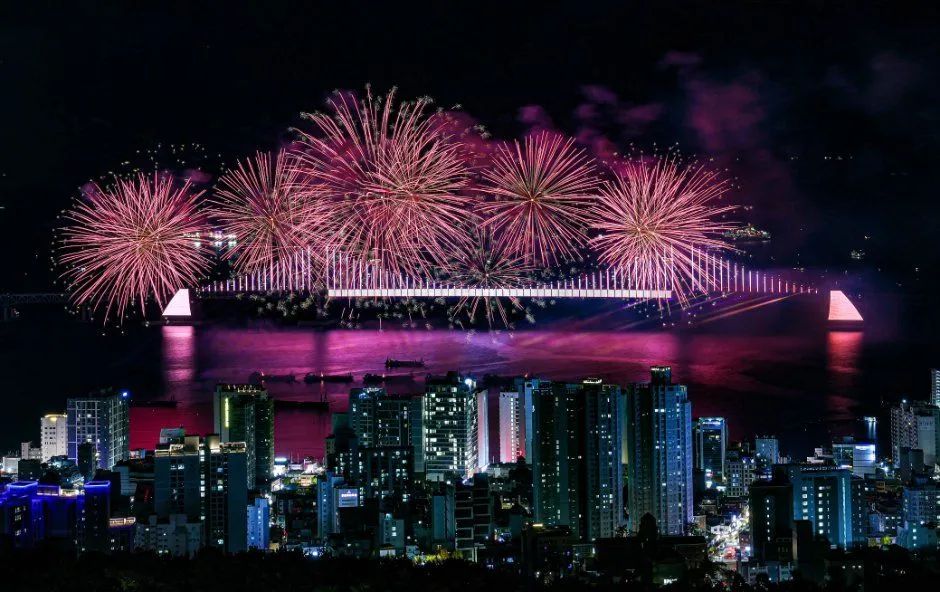
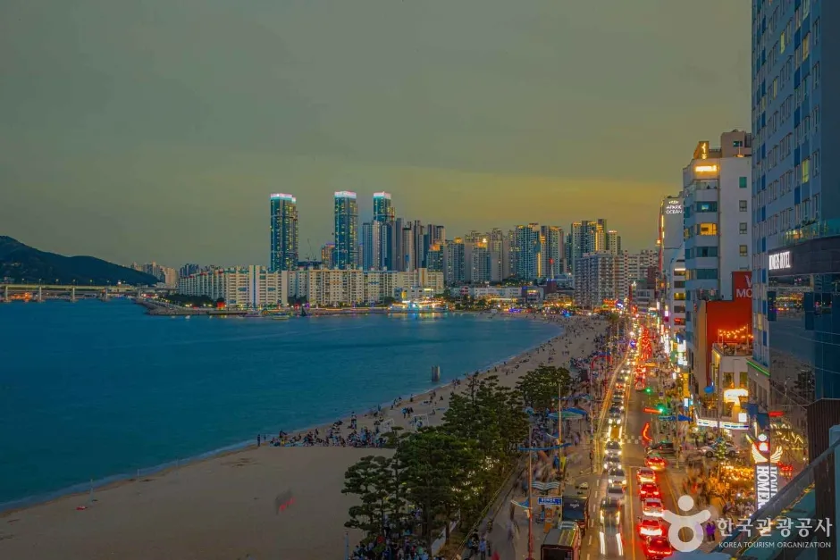
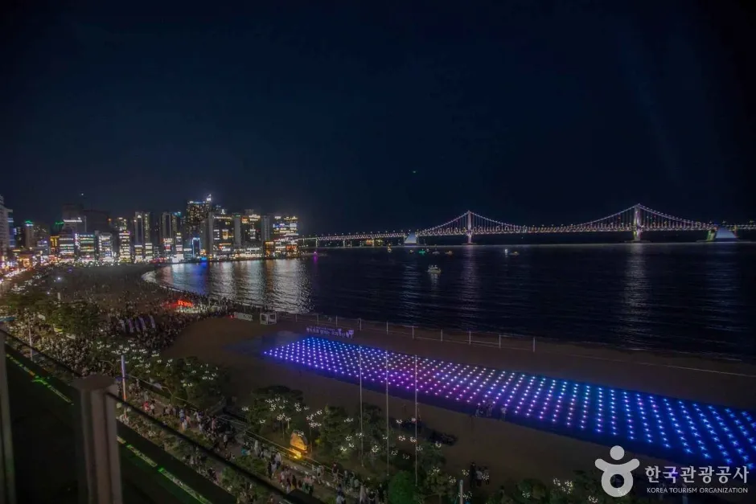
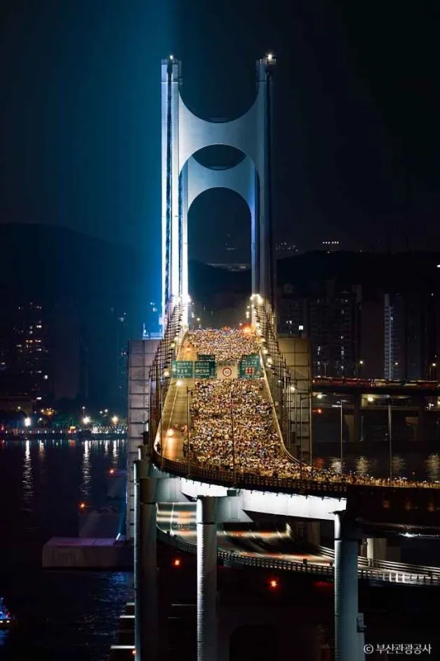
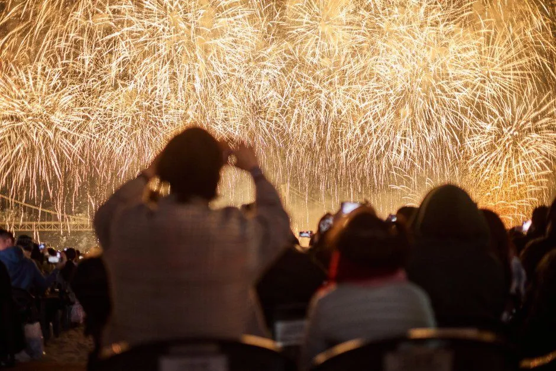
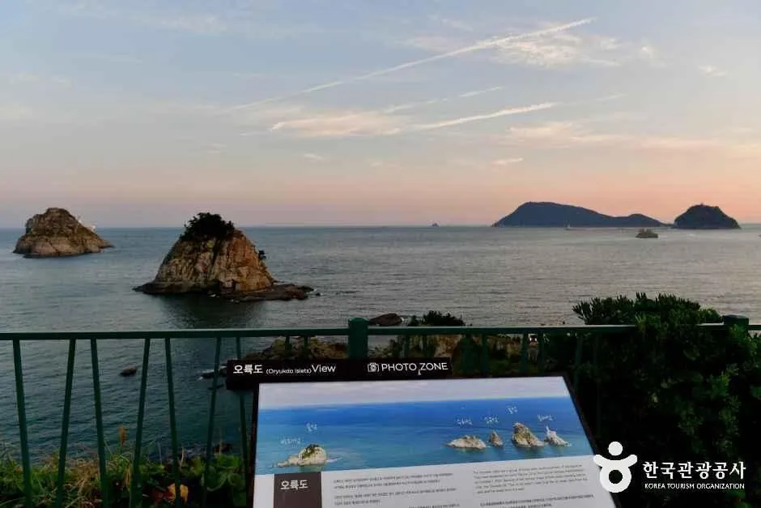
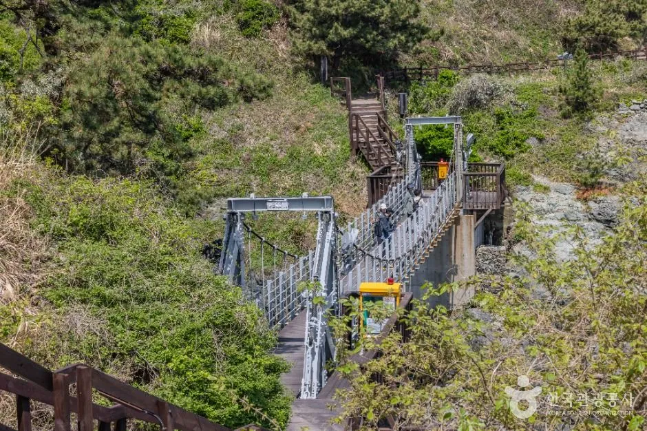
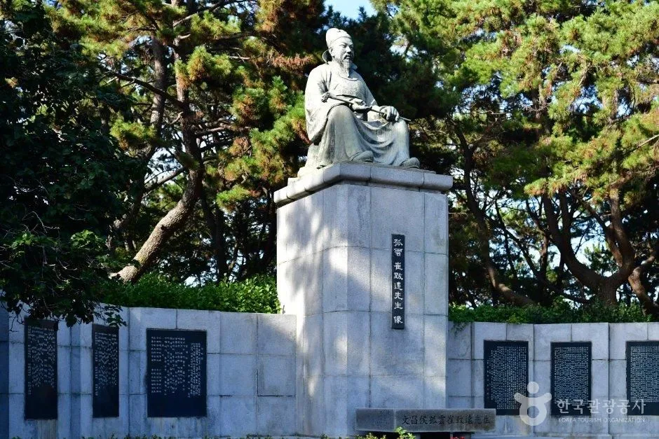

▲ 광안리 밤바다 위로 터지는 부산불꽃축제 불꽃과 관람 인파(촬영 연도는 확인 못 함) 사진=한국관광공사
2026 부산불꽃축제는 11월 7일(토), 광안리해수욕장·이기대·동백섬 일원에서 열린다. 부산불꽃축제 공식 누리집이 밝힌 개요는 여기까지이고, 올해 교통통제 구역·시간은 아직 공식 발표된 것을 확인하지 못했다. 공식 누리집의 '교통통제' 페이지에는 지금 지난해(제20회, 2025년 11월 15일) 안내 이미지가 그대로 올라와 있다(2025년 10월 29일 등록). 그래서 이 글은 "작년 실제 통제"와 "올해 확인된 것"을 표로 나눠, 자가용으로 가려는 사람이 미리 판단할 수 있게 정리했다.
1. 올해 확인된 것과 아직 없는 것 — 한눈에 구분
축제 정보는 검색하면 작년 글이 올해처럼 섞여 나온다. 아래 표는 공식 누리집과 언론 보도로 올해 사실을 확인한 항목과 확인하지 못한 항목을 나눈 것이다. 확인하지 못한 항목은 추정으로 채우지 않았다.
| 항목 | 2026(올해) | 참고: 2025(작년) 사례 |
|---|---|---|
| 일시·장소 | 11월 7일(토), 광안리해수욕장·이기대·동백섬 일원 (공식 확인) | 11월 15일(토) 14:00~20:00, 불꽃 19:00~20:00 (부산항만공사 공지) |
| 교통통제 | 미발표 (공식 페이지에 작년 이미지 게시) | 광안대교 상층 15:30·하층 18:30 전면 통제, 행사장 3단계 통제 |
| 대중교통 증편 | 미발표 | 수영·광안·금련산역 빈 열차 투입, 필요시 일부 역 무정차, 시내버스 21개 노선 집중 배차(부산일보) |
| 유료좌석 | R석 10만 원, S석 7만 원, 9월 4일 판매 개시 (언론 확인) | 유료좌석 약 14,000석 안팎(부산일보 보도) |
| 불꽃 시간 | 공식 누리집에는 프로그램 시간 미확인, 일부 예매 안내 글은 19:00~20:00로 기재(2차 자료) | 19:00~20:00 |
▲ 광안리 밤바다 위로 터지는 부산불꽃축제 불꽃과 관람 인파(한국관광공사 게시 사진, 촬영 연도는 확인 못 함) 사진=한국관광공사
행사 개요와 공지는 공식 누리집에서 확인할 수 있다. 부산불꽃축제 공식 누리집 바로가기 교통통제 페이지 바로가기
2. 교통통제 — 작년(2025) 공식 안내가 보여주는 구조
아래는 2025년 11월 15일 행사 때 부산시가 낸 공식 교통통제 안내(작년 기준)다. 올해 통제 범위가 같다고 단정할 수는 없지만, 광안대교를 불꽃 무대로 쓰고 광안리 일대에 인파가 몰리는 구조는 그대로라 통제 방식이 크게 달라질 이유는 적어 보인다(이 부분은 추정이다).

▲ 2025년 제20회 부산불꽃축제 교통통제 안내 포스터(작년 기준, 올해 안내 아님) 자료=부산불꽃축제 공식 누리집(이용 허락 별도 확인 못 함)
| 단계·시각 | 도로 | 통제 구간 | 우회로 |
|---|---|---|---|
| 1단계 10:00~종료 시 | 광안해변로 | 언양삼거리~만남의 광장 0.82km | 광남로, 수영로 |
| 2단계 14:00~ | 황령산로 | 경동건설 본사입구~황령산 봉수대 2km(현장상황에 따라 조기 통제) | - |
| 해변로 등 (16:00~) | 해변로 0.8km, 해변로 뒤 일방통행로 1.5km, 마린시티1로 1.1km, 황령산 순환도로 5.5km | 광남로, 수영로, 마린시티2·3로 | |
| 3단계 17:00~ (대중교통 제외) | 광남로 | KBS삼거리~민락교 3.0km | 수영로 |
| 민락수변로 등 | 수영교~민락교 1.4km, 해변로 통제구간 연장 등 | 수영로 | |
| 이기대공원로 | 부산환경공단 남부사업소→공관삼거리 일방통행 3.8km | - | |
| 18:00~ | 광남로 | 대중교통 11개 노선(일반 9, 마을 2) 전면 통제 | 수영로 |
ℹ️ 광안대교는 며칠 전부터 부분 통제 (작년 기준)
2025년 안내에서 광안대교는 11월 10일(월)~16일(일) 일주일간 부분통제가 이어졌고, 행사 당일 상층부(해운대→남구) 15:30~24:00, 하층부(남구→해운대) 18:30~24:00 전면 통제였다. 안내문에는 "교통상황에 따라 탄력적으로 통제"하며 "대중교통 이용을 권장"한다고 적혀 있다. 올해 광안대교 통제일정은 미발표이므로, 11월 7일 전후 광안대교를 지나는 일정이 있다면 공식 공지를 반드시 다시 확인해야 한다.

▲ 광안대교를 배경으로 터지는 불꽃. 다리가 무대 역할을 해서 행사 시간대 통제된다(한국관광공사 게시 사진) 사진=한국관광공사
3. 왜 자가용은 비추천인가 — 통제, 우회로, 주차, 귀가
부산시와 언론 안내가 공통으로 권하는 것은 대중교통이다. 작년 자료에서 읽히는 이유를 정리하면 다음과 같다.
| 이유 | 내용 |
|---|---|
| 1. 통제 범위가 넓다 | 광안해변로·광남로·민락수변로·황령산 순환도로 등 행사장 일대가 오전부터 17시까지 단계적으로 막힌다. 광남로는 18시부터 버스마저 전면 통제 |
| 2. 우회로가 좁다 | 3단계 우회로가 수영로 하나로 안내돼 우회 차량이 몰릴 수밖에 없는 구조다(2025 안내 표 기준, 혼잡 정도는 추정) |
| 3. 공식 주차 대책이 안 보인다 | 작년 안내에서 행사 전용 주차·셔틀은 확인하지 못했다. 후기성 글도 "행사장 주변 주차장은 제공되지 않는다"고 전한다(2차 자료). 올해 계획은 미발표 |
| 4. 귀가 때 갇힌다 | 광안대교 전면 통제가 작년 24:00까지였고, 행사 후 인파가 한꺼번에 빠져나가는 시간대에는 도로 사정이 나빠질 것으로 추정된다 |

▲ 해질녘 광안리 해변로와 마린시티 방향 전경. 평소에도 차량이 붐비는 구간이다(한국관광공사 게시 사진) 사진=한국관광공사
✅ 그래도 운전해야 한다면
- 행사장에서 떨어진 지하철 2호선 역 인근 주차장에 차를 대고 지하철로 이동하는 방식이 현실적이다. 특정 환승 주차장의 행사일 운영 여부는 확인하지 못했다
- 숙소를 예약했다면 숙소 주차 가능 여부와 통제 시작 전 입차 가능 여부를 숙소에 직접 확인
- 통제구간 안쪽에 차를 두면 통제 해제까지 빼기 어려울 수 있어 밤 늦게까지 걸린다고 각오하는 편이 안전(추정)
4. 대안 — 지하철 2호선 광안역·금련산역과 귀가 요령
안내가 반복해서 권하는 역은 부산 도시철도 2호선 광안역과 금련산역이다. 작년 부산시 안내에는 수영·광안·금련산역에 혼잡이 우려되면 빈 열차를 투입하고, 인파 사고 우려 시 일부 역을 무정차 통과하며, 행사 종료 후 대중교통을 증편한다는 내용이 있었다(부산일보 보도). 시내버스는 행사장 인근 21개 노선에 집중 배차하고 일부 노선은 자정까지 연장했다. 올해 증편 규모는 미발표다.
| 수단 | 장점 | 주의점 |
|---|---|---|
| 지하철 2호선 광안역 | 광안리해변과 가까운 축 | 귀가 때 붐빔. 무정차 통과 가능성(작년 안내) |
| 지하철 2호선 금련산역 | 광안역보다 귀가가 빠르다는 후기(2차 자료) | 도보 시간이 더 걸릴 수 있음 |
| 1~2정거장 걷기 | 귀가 승차 대기 시간을 줄이는 요령으로 소개됨(2차 자료) | 역 사이 도보 거리는 본인이 확인 |
| 시내버스 | 야간 연장 노선 있었음(작년) | 광남로는 18시부터 11개 노선 전면 통제, 수영로로 우회 |

▲ 조명이 켜진 광안대교와 광안리 해변 야경(한국관광공사 게시 사진) 사진=한국관광공사
차량 통제 구간의 도로는 행사 시간대에 사람이 걷는 길이 되기도 한다. 아래는 다리 주탑과 고층 건물 사이 도로를 가득 메운 야간 인파 사진이다.

▲ 도로를 가득 메운 야간 인파. 광안대교 항목으로 게시된 사진이며 촬영 시점은 확인 못 함 사진=한국관광공사
5. 유료좌석·예매 일정 — 올해 확인된 내용
부산시와 부산축제조직위원회는 9월 4일(금) 14:00부터 유료 관람석 판매를 시작했다. 공식 누리집에는 예매 기간이 9월 4일 14:00~11월 6일(금) 17:00, 예매처 NOL 티켓으로 안내돼 있다. 다만 좌석이 먼저 매진되면 그 전에 끝난다. 서울신문 보도에 따르면 얼리버드 티켓은 판매 개시 1분 안에 매진됐다.
| 구분 | 내용 |
|---|---|
| R석 | 10만 원, 테이블·의자 포함 |
| S석 | 7만 원, 의자 좌석 |
| 부산시민 할인 | 10% 할인, 1인 최대 4매(R 9만 원·S 6만 3천 원 수준, 2차 자료 계산) |
| 판매처 | NOL 티켓, 부산은행 모바일뱅킹 앱, 부산은행 영업점(S석 한정 창구 예매) |
| 공식 판매 마감 | 11월 6일(금) 17:00 (NOL 정규 티켓) |
| 좌석 수 | 올해 확인 못 함. 작년은 약 14,000석 안팎 보도 |
ℹ️ 배송·현장수령·입장 시각은 2차 자료 — 예매처에서 재확인
일부 예매 안내 블로그는 "10월 11일까지 구매하면 10월 12~16일 배송, 이후·시민할인 티켓은 현장 수령", "입장 15:00부터"라고 적었지만 공식 누리집에서는 확인하지 못했다. 공식 누리집에는 티켓 불법 거래 금지가 강조돼 있으니 되팔이 거래는 피하고, 문의는 부산축제조직위원회 051-713-5000(09:00~18:00)로 하면 된다.
예매와 공지는 공식 누리집 안내를 따라 확인한다. 예매 안내 바로가기

▲ 불꽃을 촬영하는 관람객들의 뒷모습(한국관광공사 게시 사진) 사진=한국관광공사
6. 이기대·동백섬 — 유료석 대신 볼 만한 곳
유료석을 못 구했다면 이기대와 동백섬 쪽이 후보가 된다. 공식 개요에 이기대·동백섬이 행사 장소로 함께 적혀 있고, 작년에는 이기대·동백섬에서도 별도 마무리 연출이 있었다(부산일보). 다만 이기대공원로는 작년 3단계 통제 때 부산환경공단 남부사업소→공관삼거리 일방통행이었고 차량이 많으면 전면 통제될 수 있다고 안내돼, 차로 접근하기 어렵다.
| 위치 | 특징 | 주의 |
|---|---|---|
| 광안리해변 백사장 | 정면에서 불꽃과 광안대교를 함께 봄 | 가장 붐빔, 유료석 구역은 출입 제한 |
| 이기대공원 일원 | 행사 장소로 공식 표기됨 | 차량 접근 제한 가능, 야간 산책로 안전 유의 |
| 동백섬 일원 | 행사 장소로 공식 표기됨, 작년 마무리 연출 있었음 | 해운대 방면 귀가 인파 별도 발생(추정) |

▲ 이기대 해안에서 본 오륙도 방면 조망(한국관광공사 게시 사진) 사진=한국관광공사

▲ 이기대 해안 산책로의 계단·다리 구간. 야간에는 발밑 안전에 유의(한국관광공사 게시 사진) 사진=한국관광공사

▲ 동백섬 산책로의 소나무 아래 동상(한국관광공사 게시 사진, 정확한 촬영 지점은 확인 못 함) 사진=한국관광공사
같은 부산 여행을 자가용으로 계획한다면 부산 자차 여행 주차 가이드, 광안리의 다른 야간 행사는 광안리 드론 라이트쇼 기사, 대형 불꽃행사 주차 비교는 여의도 세계불꽃축제 주차 가이드를 함께 보면 된다.
7. 요약
2026 부산불꽃축제(11월 7일)의 올해 교통통제·증편 계획은 아직 미발표이며 공식 누리집에는 2025년 안내가 게시돼 있다. 작년에는 광안대교 상층 15:30·하층 18:30 전면 통제, 행사장 3단계 통제, 광남로 대중교통 11개 노선 전면 통제가 있었으므로 자가용 접근은 비추천이고 지하철 2호선 광안역·금련산역이 대안이다.
유료좌석은 9월 4일 판매 개시, 11월 6일 17:00까지 NOL 티켓 등에서 R석 10만 원·S석 7만 원(부산시민 10% 할인)이며 좌석이 먼저 매진될 수 있다. 올해 공식 통제 발표가 나오면 다시 확인하고, 그 전까지 작년 사례는 작년임을 감안해 판단하자.